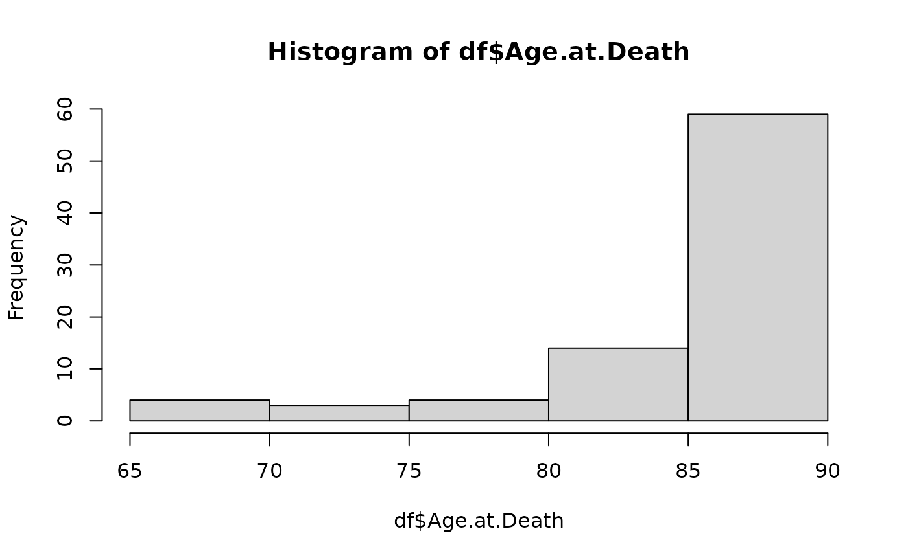

BIOST 561: Homework 1
Due date: 7:00pm on Monday, April 14th, 2025
HW1.Rmd
knitr::opts_chunk$set(
collapse = TRUE,
comment = "#>"
)
set.seed(10)Instructions
These instructions are essential, so please read them all carefully.
Submit your homework as both the RMarkdown (
.Rmd) file and HTML file on your GitHub page. (More on this later, as the first homework will guide you on how to do this.)Please answer the question prompt and show your code (inline). That is, all your code should be visible in the knitted chunks.
To complete this homework, you may write in the
HW1.Rmdfile. (It is recommended to complete this homework in R Studio, where clicking theKnitbutton would knit your homework.)
Disclosures
- Please disclose below who you collaborated with and if you’ve used ChatGPT (or any comparable AI tool) to what extent when completing this homework. See the syllabus for the course expectations.
Q0: Survey
Intent: This question is simply for course logistics and for the course instructor to get to know you.
- Question 0A: Please let me know your preferred name and preferred pronouns.
Jordan Rodriguez, he/him
- Question 0B: Please read the syllabus in its entirety and write, “I have read and understood the entire syllabus,” for this question. If you have any questions about the syllabus (for example, on the homework submission policy or collaboration policy), you may ask them here.
I have read and understood the enitre syllabus
- Question 0C: If any, please briefly describe the courses you have taken at UW that involve coding (in any language) so far and how familiar/comfortable you are in coding in R. (Note: I do not expect you to have taken any such courses already.)
I fell very familiar with R
- Question 0D: What do you hope to learn from this course? (It is alright if you leave this blank, but it would be helpful to hear your thoughts.)
I’m eager to learn the software-engineering perspective and how to automate processes.
Q1: Setting up an R package and GitHub
Intent: This section is not a question but to guide you step-by-step on how to make an R package and a GitHub, which will be critical for this course. This question will be challenging for students who are not familiar with R Studio or GitHub, so please ask the instructor questions.
Please read and walk through https://docs.google.com/document/d/1sB5qwkeOWnCU-UUkHxOjqUTep0kgpvUi7qtHo7eV8oU/edit?usp=sharing, as we have mentioned in class. Upon completion of this walkthrough, to get full marks for this question, you should have:
- Created a GitHub account,
- Created a private GitHub repository called
UWBiost561, - Created an R package, which is located in your GitHub repository
UWBiost561, - Created a vignette, which includes both
HW1.RmdandHW1.htmlunder thevignettesfolder, in your GitHub repositoryUWBiost561, - Added the username
linnykosas a Collaborator to your GitHub repositoryUWBiost561.
Note: If you do not have a lot of familiarity with R Studio or GitHub, this question will be quite challenging (even though all you’re doing is following through a walkthrough). Please start this early if you feel nervous about this because your instructor (Kevin) can better help you if you give him ample time and come to office hours.
(You do not need to write anything for this question.)
Q2: Simulating the Central Limit Theorem
Intent: This question is a simple coding exercise to demonstrate familiarity with how to do basic coding in R.
Load in the generate_data function using the following
code (all one line).
source("https://raw.githubusercontent.com/linnykos/561_s2025_public/main/HW1_files/generate_data.R")This code sources the generate_data function into your
current R workspace.
Question 2A: Read the function (either at the
URL provided or by typing generate_data into your console),
and in one to three sentences, describe the input and output of the
provided function and what the function is doing. You may use equations
if needed.
The function accepts a positive integer n as input and returns a numeric vector of length nn. First, it generates an index vector (idx_vec) by randomly sampling n digits from 1 to 3 with replacement. Then, for each digit in idx_vec, it draws a corresponding random sample from a specific distribution: a normal distribution N(10,1) for each 1, a gamma distribution for each 2, and a chi-square distribution for each 3. Finally, the function stores these random values in the positions of the output vector (sample_vec) that correspond to their associated digit in idx_vec.
Question 2B: We will now be using the
generate_data function. Observe that if we run the
following code, we would compute a (random, empirical) mean of the a
dataset with n=10 samples:
Repeat the above code 10,000 times (i.e., 10,000 trials, but keeping
n=10 for each trial), and plot a histogram of the 10,000
different empirical means with 100 breaks (i.e.,
breaks = 100). Repeat this process for n with
values of 1, 2, 3, 5, and 100, and plot these six histograms in order of
increasing n.
Figure @ref(fig:clt) shows the desired plot you aim to reproduce. In
particular, reproduce the X- and Y-labels, the title of the plot, and
the plot layout. (Hint: You might find the par function
useful, especially the mar and mfrow
arguments, as well as the paste function. See the
documentation for par.)

The figure you are trying to reproduce (without the Sample watermark) in Question 2B, barring the dimensions/proportions of the figure itself and randomness inherent to the simulation.
library(ggplot2)
results_ = matrix(NA,10000*6,2)
n_ = c(1,2,3,5,10,100)
results_[,1] = rep(n_, each = 10000)
colnames(results_) = c("n","value")
for (k in 1:6){
for (i in 1:10000){
set.seed(i)
row_index = (k - 1) * 10000 + i
results_[row_index, 2] = mean(generate_data(n = n_[k]))
}
}
dat1 = as.data.frame(results_)
ggplot(dat1, aes(x = value)) +
geom_histogram(bins = 100, fill = "steelblue", color = "white") +
facet_wrap(~ n, scales = "free_y") +
theme_minimal() +
labs(title = "Distributions of Sample Means",
x = "Sample Mean",
y = "Count")Question 2C: In one to three sentences, write how the plot you reproduced helps to verify the Central Limit Theorem.
As we increase the sample size, the distribution of the sample mean converges to a normal distribution
Q3: Basic data analysis
Intent: This question is a simple data analysis to demonstrate familiarity with how to perform basic operations in R.
In this question, we’ll load a simple dataset related to Alzheimer’s Disease (AD) research. The data originates from a single-cell database from this study. However, since this is the first homework, we’ll mainly work with donor-level data instead of the cell-level data.
df <- read.csv("https://raw.githubusercontent.com/linnykos/561_s2025_public/main/HW1_files/sea-ad.csv")
head(df)
#> Donor.ID Age.at.Death Sex APOE4.Status Cognitive.Status Last.CASI.Score
#> 1 H19.33.004 80 Female N No dementia 85
#> 2 H20.33.001 82 Male N No dementia 97
#> 3 H20.33.002 90+ Female N No dementia 93
#> 4 H20.33.004 86 Male Y Dementia 80
#> 5 H20.33.005 90+ Female N No dementia 94
#> 6 H20.33.008 90+ Female Y No dementia 92
#> Braak
#> 1 Braak IV
#> 2 Braak IV
#> 3 Braak IV
#> 4 Braak V
#> 5 Braak IV
#> 6 Braak V
summary(df)
#> Donor.ID Age.at.Death Sex APOE4.Status
#> Length:84 Length:84 Length:84 Length:84
#> Class :character Class :character Class :character Class :character
#> Mode :character Mode :character Mode :character Mode :character
#>
#>
#>
#>
#> Cognitive.Status Last.CASI.Score Braak
#> Length:84 Min. :66.00 Length:84
#> Class :character 1st Qu.:80.00 Class :character
#> Mode :character Median :89.00 Mode :character
#> Mean :87.32
#> 3rd Qu.:95.00
#> Max. :99.00
#> NA's :15Here are brief descriptions of each variable:
-
Donor.ID: The anonymized ID of the donor who donated their brain to AD research -
Age.at.Death: The age of the donor when they passed away -
Sex: The biological sex of the donor. (Kevin’s comment: In this study, it seems like this is strictly onlyMaleorFemale…?) -
APOE4.Status:Y(for yes) orN(for no) if the donor has a particular genetic variant that is known to be a risk factor for AD -
Cognitive.Status: Whether the donor has dementia or not based on a wide array of cognitive assessments before death -
Last.CASI.Score: The last score the donor had, measured via CASI (a specific set of cognitive questions), before death -
Braak: Different severities of neuropathology based on the donor’s brain tissue, extracted after the donor’s consent and death
Hopefully, this is a reminder to carefully describe your study variables in any dataset you publish or collaborate on!
Question 3A: Describe, in two to four
sentences, what the head(df) and summary(df)
results display.
prints the first 6 observations allong with variable names
Question 3B: Use a simple function to print
out the dimensionality of df (i.e., how many rows and
columns there are). What is the class of df?
there are 84 observations and 7 variables. The class is a data frame
Question 3C: You’ll note that in
summary(df), the variable Age.at.Death is a
character, even though it should be a numeric. This is
because there are values of 90+. As a simple diagnostic, 1)
replace all the 90+ values in df$Age.at.Death
with 90, 2) convert df$Age.at.Death from a
character to a numeric, and 3) plot a histogram of
df$Age.at.Death.
Figure @ref(fig:hist) shows the desired plot you aim to reproduce.
table(df$Age.at.Death)
#>
#> 65 68 69 70 72 75 77 78 80 81 82 83 84 85 86 87 88 89 90+
#> 1 1 1 1 1 2 1 1 2 3 4 3 2 2 3 2 5 3 46
df$Age.at.Death = as.numeric(substr(df$Age.at.Death,1,2))
hist(df$Age.at.Death )

The figure you are trying to reproduce (without the Sample watermark) in Question 3C, barring the dimensions/proportions of the figure itself.
Question 3D: The summary()
function is much more useful when the columns of df are
factors, not characters. Write some lines of code to convert the
variables Sex, APOE4.Status,
Cognitive.Status, and Braak to be factors.
(This should take less than 10 lines of code.)
names(df)
#> [1] "Donor.ID" "Age.at.Death" "Sex" "APOE4.Status"
#> [5] "Cognitive.Status" "Last.CASI.Score" "Braak"
df[,3:5] = lapply(df[,3:5], as.factor)Question 3E: With this new version of
df, after finishing the previous questions, show the result
of summary(df).
summary(df)
#> Donor.ID Age.at.Death Sex APOE4.Status
#> Length:84 Min. :65.00 Female:51 N:59
#> Class :character 1st Qu.:83.75 Male :33 Y:25
#> Mode :character Median :90.00
#> Mean :86.26
#> 3rd Qu.:90.00
#> Max. :90.00
#>
#> Cognitive.Status Last.CASI.Score Braak
#> Dementia :42 Min. :66.00 Length:84
#> No dementia:42 1st Qu.:80.00 Class :character
#> Median :89.00 Mode :character
#> Mean :87.32
#> 3rd Qu.:95.00
#> Max. :99.00
#> NA's :15Figure @ref(fig:summary) shows the desired output you aim to reproduce.

The intended output of Question 3E.
In one sentence, describe how the summary here (in Question 3E) is more informative than the summary shown at the start of Question 3.
it provides how many observations per level are in factor variables and the distribution of numeric variables
Question 3F: Using the table()
function, display the relation between Braak and
Cognitive.Status. Please look at ?table (for
the documentation of table()) if you are unfamiliar with
this function.
table(df$Braak, df$Cognitive.Status)
#>
#> Dementia No dementia
#> Braak 0 0 2
#> Braak II 2 2
#> Braak III 2 4
#> Braak IV 4 19
#> Braak V 20 14
#> Braak VI 14 1Question 3G: This question will be slightly
challenging. The table() function is not as useful when
there are many unique values (such as in Last.CASI.Score).
To overcome this, look up the documentation for the cut and
quantile functions. The goal is to use the
table(), cut(), and quantile() to
show the relation of the quantiles of Last.CASI.Score with
Cognitive.Status. You will want to use
na.rm=TRUE when using the quantile()
function.
quantiles <- quantile(df$Last.CASI.Score, probs = seq(0, 1, 0.25), na.rm = TRUE)
casi_quantile_group <- cut(df$Last.CASI.Score, breaks = quantiles, include.lowest = TRUE)
table(casi_quantile_group, df$Cognitive.Status)
#>
#> casi_quantile_group Dementia No dementia
#> [66,80] 17 1
#> (80,89] 10 8
#> (89,95] 2 15
#> (95,99] 3 13Figure @ref(fig:table) shows the desired output you aim to reproduce.

The intended output of Question 3G.
In one to two sentences, describe what you can learn from the
relation between Last.CASI.Score and
Cognitive.Status based on this result.
the lower the score, the higher the risk of dementia
Q4: Pushing the homework onto GitHub
Intent: This section is not a question but a guide on submitting your homework. This procedure will be the expectation for all future homeworks.
Now that you have completed this homework, all that’s remaining is to
push this homework onto your UWBiost561 GitHub repository.
To do this, please ensure:
- Your file is named
HW1.Rmd. (This current homework file you are writing in will replace the initialHW1.Rmdyou made when you completed the walkthrough in Question 1.) - Your file is in the
vignettesfolder in yourUWBiost561R package. - You push your two files,
HW1.RmdandHW1.html(the latter is the knitted HTML file) onto your GitHub repository. - Double-check that you can see both files online on github.com when you look at your repository.
-
LASTLY: Upload
HW1.htmlto Canvas under “Assignment 1”. (This is for university-wide policy, but also helps me keep track of completion status of homeworks via Canvas.)
Again, ensure the username linnykos is added to your
private GitHub repository. And with that, you’re done! (For future
homeworks, you will be “submitting” your homeworks like this.)
(You do not need to write anything for this question.)
Q5: Feedback (Optional)
This “question” is an additional way for students to communicate with instructors. You could include positive feedback about topics you enjoyed learning this module, critiques about the course difficulty/pacing, or some questions/confusions you had about course material. Your feedback can help us shape the course for the rest of this quarter and future years. Please be mindful and polite when providing feedback. You may leave this question blank.
Despite being a multi-step process, I liked how clear were the instructions. I had experience using github desktop for windows but not using it in R sudio directly! Is interesting. Also appreciate that the data analysis section was minimal.